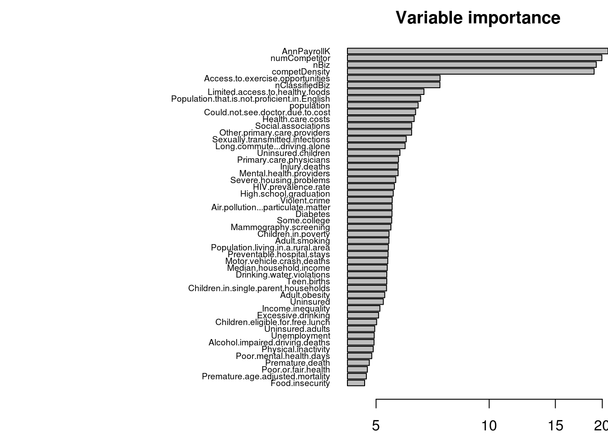

Set paths and load dependencies
## [1] "/mnt/hgfs/projects/insight/models/rf_fastVsSlow"## Loading required package: randomForest
## randomForest 4.6-10
## Type rfNews() to see new features/changes/bug fixes.
## Loading required package: choroplethrZipGet indicator variables identifying stores as fast or slow growing (1487 stores)
## Loading objects:
## tsList
## highGrowthDf
## aveGrowthDf
## growth_mth
## growth_qtr
## growth_yr## highMthGrowth highQtrGrowth highYrGrowth
## 000026 0 0 1
## 000417 0 0 0
## 001172 0 1 1Load store features (1437 stores)
load(file=paste0(ProjectPath,"/insight/data/dsStore.RData"),verbose=T) #store level## Loading objects:
## dsStorestr(dsStore)## 'data.frame': 1437 obs. of 109 variables:
## $ storeID : chr "177721" "250113" "408502" "408721" ...
## $ zip : chr "01002" "01005" "01028" "01056" ...
## $ city : chr "AMHERST" "BARRE" "EAST LONGMEADOW" "LUDLOW" ...
## $ fip : chr "25011" "25027" "25013" "25013" ...
## $ county : chr "franklin" "worcester" "hampden" "hampden" ...
## $ state : chr "MA" "MA" "MA" "MA" ...
## $ busType : Factor w/ 19 levels "CLOSED PHARMACY ",..: 16 16 5 5 5 5 5 5 5 16 ...
## $ bizType : Factor w/ 3 levels "medical","others",..: 3 3 3 3 3 3 3 3 3 3 ...
## $ retail : int 1 1 1 1 1 1 1 1 1 1 ...
## $ medical : int 0 0 0 0 0 0 0 0 0 0 ...
## $ others : int 0 0 0 0 0 0 0 0 0 0 ...
## $ population : num 71221 809106 467319 467319 159596 ...
## $ Population.that.is.not.proficient.in.English : num 0.01 0.03 0.057 0.057 0.01 0.057 0.01 0.057 0.057 0.057 ...
## $ Population.living.in.a.rural.area : num 0.544 0.184 0.086 0.086 0.274 0.086 0.274 0.086 0.086 0.086 ...
## $ Uninsured : num 0.041 0.047 0.049 0.049 0.043 0.049 0.043 0.049 0.049 0.049 ...
## $ Uninsured.adults : num 0.049 0.059 0.062 0.062 0.051 0.062 0.051 0.062 0.062 0.062 ...
## $ Uninsured.children : num 0.015 0.015 0.015 0.015 0.014 0.015 0.014 0.015 0.015 0.015 ...
## $ Unemployment : num 0.066 0.079 0.089 0.089 0.061 0.089 0.061 0.089 0.089 0.089 ...
## $ Income.inequality : num 4.21 4.95 5.69 5.69 4.68 ...
## $ Median.household.income : num 51828 62268 48560 48560 61911 ...
## $ numCompetitor : num 118 21 82 47 219 62 49 19 59 251 ...
## $ competDensity : num 0.992 0.955 0.988 0.979 0.995 ...
## $ Premature.death : num 5159 5556 6638 6638 4652 ...
## $ Poor.or.fair.health : num 0.103 0.119 0.15 0.15 0.1 0.15 0.1 0.15 0.15 0.15 ...
## $ Poor.physical.health.days : num 4 3.3 3.8 3.8 3.3 3.8 3.3 3.8 3.8 3.8 ...
## $ Poor.mental.health.days : num 3.3 3.4 3.9 3.9 2.9 3.9 2.9 3.9 3.9 3.9 ...
## $ Low.birthweight : num 0.07 0.07 0.08 0.08 0.06 0.08 0.06 0.08 0.08 0.08 ...
## $ Adult.smoking : num 0.187 0.181 0.188 0.188 0.121 0.188 0.121 0.188 0.188 0.188 ...
## $ Adult.obesity : num 0.221 0.26 0.289 0.289 0.218 0.289 0.218 0.289 0.289 0.289 ...
## $ Food.environment.index : num 8.4 8.4 7.9 7.9 8.3 7.9 8.3 7.9 7.9 7.9 ...
## $ Physical.inactivity : num 0.181 0.222 0.267 0.267 0.152 0.267 0.152 0.267 0.267 0.267 ...
## $ Access.to.exercise.opportunities : num 0.8 0.929 0.942 0.942 0.859 0.942 0.859 0.942 0.942 0.942 ...
## $ Excessive.drinking : num 0.182 0.212 0.194 0.194 0.197 0.194 0.197 0.194 0.194 0.194 ...
## $ Alcohol.impaired.driving.deaths : num 0.333 0.283 0.3 0.3 0.237 0.3 0.237 0.3 0.3 0.3 ...
## $ Sexually.transmitted.infections : num 154 288 613 613 229 ...
## $ Teen.births : num 21 20.4 39.1 39.1 5 39.1 5 39.1 39.1 39.1 ...
## $ Primary.care.physicians : int 67 102 73 73 144 73 144 73 73 73 ...
## $ Dentists : int 62 65 75 75 65 75 65 75 75 75 ...
## $ Mental.health.providers : num 590 368 575 575 670 575 670 575 575 575 ...
## $ Preventable.hospital.stays : num 63.1 65.2 65.5 65.5 54.9 ...
## $ Diabetic.screening : num 0.9 0.89 0.88 0.88 0.89 0.88 0.89 0.88 0.88 0.88 ...
## $ Mammography.screening : num 0.71 0.69 0.72 0.72 0.77 0.72 0.77 0.72 0.72 0.72 ...
## $ High.school.graduation : num 0.815 0.856 0.732 0.732 0.882 0.732 0.882 0.732 0.732 0.732 ...
## $ Some.college : num 0.663 0.674 0.579 0.579 0.762 0.579 0.762 0.579 0.579 0.579 ...
## $ Children.in.poverty : num 0.177 0.18 0.293 0.293 0.121 0.293 0.121 0.293 0.293 0.293 ...
## $ Children.in.single.parent.households : num 0.33 0.292 0.473 0.473 0.303 0.473 0.303 0.473 0.473 0.473 ...
## $ Social.associations : num 11.88 8.65 8.84 8.84 9.26 ...
## $ Violent.crime : num 379 447 641 641 245 ...
## $ Injury.deaths : num 47.3 45.8 48.9 48.9 38.2 48.9 38.2 48.9 48.9 48.9 ...
## $ Air.pollution...particulate.matter : num 10.6 10.5 10.7 10.7 10.7 ...
## $ Drinking.water.violations : num 0.222 0.253 0.081 0.081 0.43 0.081 0.43 0.081 0.081 0.081 ...
## $ Severe.housing.problems : num 0.174 0.16 0.197 0.197 0.162 0.197 0.162 0.197 0.197 0.197 ...
## $ Driving.alone.to.work : num 0.785 0.818 0.827 0.827 0.715 0.827 0.715 0.827 0.827 0.827 ...
## $ Long.commute...driving.alone : num 0.358 0.406 0.27 0.27 0.344 0.27 0.344 0.27 0.27 0.27 ...
## $ Diabetes : num 0.083 0.088 0.104 0.104 0.062 0.104 0.062 0.104 0.104 0.104 ...
## $ HIV.prevalence.rate : num 102 244 441 441 102 ...
## $ Premature.age.adjusted.mortality : num 260 292 335 335 248 ...
## $ Infant.mortality : num 5.7 5.6 6.6 6.6 3.6 6.6 3.6 6.6 6.6 6.6 ...
## $ Child.mortality : num 43.1 40.5 48 48 31.6 48 31.6 48 48 48 ...
## $ Food.insecurity : num 0.102 0.104 0.126 0.126 0.099 0.126 0.099 0.126 0.126 0.126 ...
## $ Limited.access.to.healthy.foods : num 0.053 0.047 0.053 0.053 0.064 0.053 0.064 0.053 0.053 0.053 ...
## $ Motor.vehicle.crash.deaths : num 6.59 6.7 6.85 6.85 5.71 6.85 5.71 6.85 6.85 6.85 ...
## $ Drug.poisoning.deaths : num 9.98 12.99 13.51 13.51 10.14 ...
## $ Health.care.costs : num 7596 9560 8598 8598 8388 ...
## $ Could.not.see.doctor.due.to.cost : num 0.081 0.073 0.092 0.092 0.068 0.092 0.068 0.092 0.092 0.092 ...
## $ Other.primary.care.providers : num 49 96 100 100 65 100 65 100 100 100 ...
## $ Children.eligible.for.free.lunch : num 0.313 0.297 0.518 0.518 0.218 0.518 0.218 0.518 0.518 0.518 ...
## $ Homicide.rate : num NA 1.9 4.6 4.6 NA 4.6 NA 4.6 4.6 4.6 ...
## $ AnnPayrollK : int 398992 27261 303098 173592 439516 111574 140766 79246 151225 745793 ...
## $ nBiz : num 803.1 12 107.6 88.4 483.7 ...
## $ Agriculture_Forestry_Fishing_and_Hunting : num 0 0 0 0 0 0 0 0 0 0 ...
## $ Mining_Quarrying_and_Oil_and_Gas_Extraction : num 0 0 0 0 0 0 0 0 0 0 ...
## $ Utilities : num 0 0 0 0 0 0 0 0 0 0 ...
## $ Construction : num 0 0 0 0 0 0 0 0 0 0 ...
## $ manufacturing : num 0 0 0 0 0 0 0 0 0 0 ...
## $ Wholesale_Trade : num 0 0 0 0 0 0 0 0 0 0 ...
## $ retailInd : num 0 0 0 0 0 0 0 0 0 0 ...
## $ transportwarehousing : num 0 0 0 0 0 0 0 0 0 0 ...
## $ Information : num 0 0 0 0 0 0 0 0 0 0 ...
## $ Finance_and_Insurance : num 0 0 0 0 0 0 0 0 0 0 ...
## $ Real_Estate_and_Rental_and_Leasing : num 0 0 0 0 0 0 0 0 0 0 ...
## $ Professional_Scientific_and_Technical_Services : num 0 0 0 0 0 0 0 0 0 0 ...
## $ Management_of_Companies_and_Enterprises : num 0 0 0 0 0 0 0 0 0 0 ...
## $ Administrative_and_Support_and_Waste_Management_and_Remediation_Services : num 0 0 0 0 0 0 0 0 0 0 ...
## $ Educational_Services : num 1.4 0 0 0 0 ...
## $ Health_Care_and_Social_Assistance : num 1.404 0 0 0 0.627 ...
## $ Offices_of_Physicians : num 0 0 0 0 0 0 0 0 0 0 ...
## $ Offices_of_Dentists : num 0 0 0 0 0 0 0 0 0 0 ...
## $ Offices_of_Other_Health_Practitioners : num 0 0 0 0 0 0 0 0 0 0 ...
## $ Outpatient_Care_Centers : num 0 0 0 0 0 0 0 0 0 0 ...
## $ Medical_and_Diagnostic_Laboratories : num 0 0 0 0 0 0 0 0 0 0 ...
## $ Home_Health_Care_Services : num 0 0 0 0 0 0 0 0 0 0 ...
## $ Other_Ambulatory_Health_Care_Services : num 0 0 0 0 0 0 0 0 0 0 ...
## $ General_Medical_and_Surgical_Hospitals : num 0 0 0 0 0.627 ...
## $ Psychiatric_and_Substance_Abuse_Hospitals : num 0 0 0 0 0 0 0 0 0 0 ...
## $ Specialty_except_Psychiatric_and_Substance_Abuse_Hospitals : num 0 0 0 0 0 0 0 0 0 0 ...
## $ Nursing_Care_Facilities_Skilled_Nursing_Facilities : num 0 0 0 0 0 0 0 0 0 0 ...
## $ Residential_Intellectual_and_Developmental_Disability_Mental_Health_and_Substance_Abuse_Facilities: num 0 0 0 0 0 0 0 0 0 0 ...
## $ Continuing_Care_Retirement_Communities_and_Assisted_Living_Facilities_for_the_Elderly : num 0 0 0 0 0 0 0 0 0 0 ...
## [list output truncated]Load data matrix and the test set for random forest
## 'data.frame': 1334 obs. of 112 variables:
## $ Row.names :Class 'AsIs' chr [1:1334] "000026" "000417" "001172" "001714" ...
## $ highMthGrowth : num 0 0 0 0 0 0 0 0 0 0 ...
## $ highQtrGrowth : num 0 0 1 1 0 0 0 0 0 0 ...
## $ highYrGrowth : num 1 0 1 1 0 1 0 0 1 1 ...
## $ zip : chr "81435" "56201" "81054" "13413" ...
## $ city : chr "TELLURIDE" "WILLMAR" "LAS ANIMAS" "NEW HARTFORD" ...
## $ fip : chr "08113" "27067" "08009" "36043" ...
## $ county : chr "san miguel" "kandiyohi" "baca" "herkimer" ...
## $ state : chr "CO" "MN" "CO" "NY" ...
## $ busType : Factor w/ 19 levels "CLOSED PHARMACY ",..: 16 5 16 16 16 16 16 16 16 16 ...
## $ bizType : Factor w/ 3 levels "medical","others",..: 3 3 3 3 3 3 3 3 3 3 ...
## $ retail : int 1 1 1 1 1 1 1 1 1 1 ...
## $ medical : int 0 0 0 0 0 0 0 0 0 0 ...
## $ others : int 0 0 0 0 0 0 0 0 0 0 ...
## $ population : num 7678 42410 3682 64181 38078 ...
## $ Population.that.is.not.proficient.in.English : num 0.022 0.021 0.005 0.009 0.009 0.058 0.054 NA 0.082 0.113 ...
## $ Population.living.in.a.rural.area : num 1 0.445 1 0.518 0.35 0.272 0.8 NA 0.266 0.001 ...
## $ Uninsured : num 0.219 0.11 0.213 0.113 0.152 0.2 0.255 NA 0.222 0.193 ...
## $ Uninsured.adults : num 0.237 0.123 0.243 0.139 0.176 0.252 0.314 NA 0.287 0.239 ...
## $ Uninsured.children : num 0.156 0.078 0.14 0.043 0.077 0.077 0.112 NA 0.079 0.077 ...
## $ Unemployment : num 0.063 0.046 0.037 0.081 0.057 0.073 0.087 NA 0.07 0.062 ...
## $ Income.inequality : num 3.85 3.99 4.65 4.36 4.93 ...
## $ Median.household.income : num 53674 53290 35787 42460 43699 ...
## $ numCompetitor : num 29 175 10 298 130 21 28 4 27 7 ...
## $ competDensity : num 0.967 0.989 0.909 0.997 0.992 ...
## $ Premature.death : num 3445 5002 10558 5689 5943 ...
## $ Poor.or.fair.health : num NA 0.104 0.132 0.142 0.115 0.162 0.198 NA 0.148 0.145 ...
## $ Poor.physical.health.days : num NA 3.1 3.6 3.1 3.6 3.2 4.3 NA 4 3.1 ...
## $ Poor.mental.health.days : num NA 1.9 2.5 4.5 2.8 2.8 3.9 NA 3 3.2 ...
## $ Low.birthweight : num 0.07 0.06 0.1 0.07 0.05 0.06 0.08 NA 0.06 0.06 ...
## $ Adult.smoking : num NA 0.217 NA 0.193 0.142 0.132 0.235 NA 0.151 0.109 ...
## $ Adult.obesity : num 0.164 0.278 0.206 0.31 0.266 0.258 0.292 NA 0.264 0.207 ...
## $ Food.environment.index : num 8.1 8.2 7.5 8.1 6.7 7.8 7.1 NA 6.9 8.4 ...
## $ Physical.inactivity : num 0.128 0.232 0.225 0.242 0.158 0.171 0.26 NA 0.192 0.158 ...
## $ Access.to.exercise.opportunities : num 0.824 0.708 0.855 0.657 0.794 0.89 0.723 NA 0.734 0.983 ...
## $ Excessive.drinking : num 0.274 0.091 NA 0.188 0.217 0.145 0.151 NA 0.141 0.172 ...
## $ Alcohol.impaired.driving.deaths : num 0.167 0.208 0.222 0.281 0.323 0.289 0.42 NA 0.417 0.313 ...
## $ Sexually.transmitted.infections : num 145 276 267 288 272 ...
## $ Teen.births : num 17.6 41.6 48.3 24.8 10.4 42.6 58.9 NA 44 25 ...
## $ Primary.care.physicians : int 66 113 80 43 68 114 97 NA 36 94 ...
## $ Dentists : int 52 66 54 31 45 69 63 NA 53 101 ...
## $ Mental.health.providers : num 221 278 27 47 147 158 245 NA 35 196 ...
## $ Preventable.hospital.stays : num NA 35.3 86.1 79 41.7 ...
## $ Diabetic.screening : num 0.87 0.92 0.84 0.88 0.87 0.92 0.87 NA 0.89 0.84 ...
## $ Mammography.screening : num 0.63 0.76 0.43 0.68 0.62 0.7 0.54 NA 0.67 0.64 ...
## $ High.school.graduation : num NA 0.744 0.505 0.779 0.819 0.741 0.808 NA 0.819 0.91 ...
## $ Some.college : num 0.749 0.644 0.656 0.607 0.805 0.467 0.457 NA 0.5 0.658 ...
## $ Children.in.poverty : num 0.18 0.181 0.293 0.254 0.152 0.23 0.308 NA 0.237 0.188 ...
## $ Children.in.single.parent.households : num 0.19 0.341 0.244 0.336 0.193 0.27 0.327 NA 0.28 0.26 ...
## $ Social.associations : num 14.5 20.8 13.3 12.1 10.2 ...
## $ Violent.crime : num 102 177 122 239 120 ...
## $ Injury.deaths : num 61.9 58.4 153.4 48.5 56.3 ...
## $ Air.pollution...particulate.matter : num 10.7 13.2 13 11.5 11.1 ...
## $ Drinking.water.violations : num 0.001 0.01 0.026 0.222 0.02 0.002 0.01 NA 0 0 ...
## $ Severe.housing.problems : num 0.216 0.132 0.128 0.137 0.196 0.159 0.155 NA 0.173 0.288 ...
## $ Driving.alone.to.work : num 0.469 0.813 0.662 0.811 0.668 0.78 0.738 NA 0.783 0.78 ...
## $ Long.commute...driving.alone : num 0.205 0.148 0.112 0.306 0.205 0.172 0.214 NA 0.167 0.373 ...
## $ Diabetes : num 0.048 0.084 0.083 0.103 0.069 0.091 0.101 NA 0.094 0.076 ...
## $ HIV.prevalence.rate : num 109.5 45.6 NA 83.4 65 ...
## $ Premature.age.adjusted.mortality : num 153 249 485 301 278 ...
## $ Infant.mortality : num NA NA NA 7.6 NA 5.6 5.9 NA 6.2 4.5 ...
## $ Child.mortality : num NA 39.6 NA 62 68.2 35.9 82.8 NA 45.5 33.4 ...
## $ Food.insecurity : num 0.135 0.097 0.126 0.12 0.182 0.126 0.155 NA 0.125 0.122 ...
## $ Limited.access.to.healthy.foods : num 0.013 0.085 0.083 0.044 0.046 0.061 0.065 NA 0.148 0.01 ...
## $ Motor.vehicle.crash.deaths : num NA 13.9 63.7 12 12 ...
## $ Drug.poisoning.deaths : num NA 3.4 NA 7.11 6.18 ...
## $ Health.care.costs : num 6992 6588 9422 8721 7286 ...
## $ Could.not.see.doctor.due.to.cost : num NA 0.09 0.12 0.151 0.116 0.161 0.183 NA 0.138 0.125 ...
## $ Other.primary.care.providers : num 65 50 81 36 42 92 109 NA 33 39 ...
## $ Children.eligible.for.free.lunch : num 0.218 0.421 0.383 0.389 0.204 0.517 0.54 NA 0.449 NA ...
## $ Homicide.rate : num NA NA NA NA NA 3.6 5 NA NA 2.4 ...
## $ AnnPayrollK : int 110891 491671 15971 536714 176426 58648 25796 26024 26201 26053 ...
## $ nBiz : num 6577 2061 1249 1105 1741 ...
## $ Agriculture_Forestry_Fishing_and_Hunting : num 0 0 0 0 0 0 0 NA 0 0 ...
## $ Mining_Quarrying_and_Oil_and_Gas_Extraction : num 0 0 0 0 0 0 0 NA 0 0 ...
## $ Utilities : num 0 0 0 0 0 0 0 NA 0 0 ...
## $ Construction : num 0 0 0 0 0 0 0 NA 0 0 ...
## $ manufacturing : num 0 2.36 0 0 0 ...
## $ Wholesale_Trade : num 0 0 0 0 0 0 0 NA 0 0 ...
## $ retailInd : num 0 0 0 0 0 0 0 NA 0 0 ...
## $ transportwarehousing : num 0 0 0 0 0 0 0 NA 0 0 ...
## $ Information : num 0 0 0 0 0 0 0 NA 0 0 ...
## $ Finance_and_Insurance : num 0 0 0 0 0 0 0 NA 0 0 ...
## $ Real_Estate_and_Rental_and_Leasing : num 0 0 0 0 0 0 0 NA 0 0 ...
## $ Professional_Scientific_and_Technical_Services : num 0 0 0 0 0 0 0 NA 0 0 ...
## $ Management_of_Companies_and_Enterprises : num 0 0 0 0 0 0 0 NA 0 0 ...
## $ Administrative_and_Support_and_Waste_Management_and_Remediation_Services : num 0 0 0 1.56 0 ...
## $ Educational_Services : num 0 0 0 0 0 0 0 NA 0 0 ...
## $ Health_Care_and_Social_Assistance : num 0 0 0 1.56 0 ...
## $ Offices_of_Physicians : num 0 0 0 0 0 0 0 NA 0 0 ...
## $ Offices_of_Dentists : num 0 0 0 0 0 0 0 NA 0 0 ...
## $ Offices_of_Other_Health_Practitioners : num 0 0 0 0 0 0 0 NA 0 0 ...
## $ Outpatient_Care_Centers : num 0 0 0 0 0 0 0 NA 0 0 ...
## $ Medical_and_Diagnostic_Laboratories : num 0 0 0 0 0 0 0 NA 0 0 ...
## $ Home_Health_Care_Services : num 0 0 0 0 0 0 0 NA 0 0 ...
## $ Other_Ambulatory_Health_Care_Services : num 0 0 0 0 0 0 0 NA 0 0 ...
## $ General_Medical_and_Surgical_Hospitals : num 0 0 0 1.56 0 ...
## $ Psychiatric_and_Substance_Abuse_Hospitals : num 0 0 0 0 0 0 0 NA 0 0 ...
## $ Specialty_except_Psychiatric_and_Substance_Abuse_Hospitals : num 0 0 0 0 0 0 0 NA 0 0 ...
## [list output truncated]Set aside 10% test set for validation Save this test set for validating other models
testID=sample(nrow(dsMat),0.1*nrow(dsMat))
#ensure no NA or missing values (do zero imputation)
sum(is.na(dsMat))## [1] 10555dsMat[is.na(dsMat)]=0
sum(is.na(dsMat))## [1] 0save(dsMat,testID,file="dsMat.RData")Acceptable prediction performance (OOB=0.27) Consider adding more features or model average monthly growth instead of fast vs slow monthly sales
#drop variables that you don't wish to model
excludeVarID=grep("Row.names|high|zip|city|fip|county|^state$|Type$",colnames(dsMat))
colnames(dsMat)[excludeVarID]## [1] "Row.names" "highMthGrowth" "highQtrGrowth" "highYrGrowth"
## [5] "zip" "city" "fip" "county"
## [9] "state" "busType" "bizType"#ensure that response highMthGrowth is a factor to run randomForest in classification mode
dsMat$highMthGrowth=as.factor(dsMat$highMthGrowth)
mod_rf=randomForest(x=dsMat[-testID,-excludeVarID],y=dsMat$highMthGrowth[-testID],
xtest=dsMat[testID,-excludeVarID],ytest=dsMat$highMthGrowth[testID])
mod_rf##
## Call:
## randomForest(x = dsMat[-testID, -excludeVarID], y = dsMat$highMthGrowth[-testID], xtest = dsMat[testID, -excludeVarID], ytest = dsMat$highMthGrowth[testID])
## Type of random forest: classification
## Number of trees: 500
## No. of variables tried at each split: 10
##
## OOB estimate of error rate: 27.48%
## Confusion matrix:
## 0 1 class.error
## 0 819 79 0.08797327
## 1 251 52 0.82838284
## Test set error rate: 34.59%
## Confusion matrix:
## 0 1 class.error
## 0 84 17 0.1683168
## 1 29 3 0.9062500
Less important variables (in decreasing importance)
## [,1]
## Driving.alone.to.work 4.65663751
## Dentists 4.65069437
## Child.mortality 4.49120776
## Drug.poisoning.deaths 4.19411101
## Food.environment.index 4.17028636
## Health_Care_and_Social_Assistance 4.14454223
## General_Medical_and_Surgical_Hospitals 4.12906061
## Poor.physical.health.days 4.00330617
## Diabetic.screening 3.94801294
## Homicide.rate 3.86758933
## Infant.mortality 3.58930607
## medical 3.11303104
## Management_of_Companies_and_Enterprises 2.33432064
## Low.birthweight 2.32457886
## Administrative_and_Support_and_Waste_Management_and_Remediation_Services 1.99018785
## retail 1.89980249
## Professional_Scientific_and_Technical_Services 1.54831555
## manufacturing 1.48605977
## Individual_and_Family_Services 1.10825412
## Educational_Services 1.07851154
## Finance_and_Insurance 1.00062957
## transportwarehousing 0.91555692
## Information 0.67597040
## others 0.52367657
## Mining_Quarrying_and_Oil_and_Gas_Extraction 0.49429978
## Accommodation_and_Food_Services 0.42327803
## Wholesale_Trade 0.39188785
## Utilities 0.33361471
## retailInd 0.30787362
## Construction 0.26917316
## Other_Services_except_Public_Administration 0.17672613
## Specialty_except_Psychiatric_and_Substance_Abuse_Hospitals 0.16869441
## Offices_of_Physicians 0.12970251
## Real_Estate_and_Rental_and_Leasing 0.12185313
## Arts_Entertainment_and_Recreation 0.11668632
## Vocational_Rehabilitation_Services 0.10912974
## Home_Health_Care_Services 0.08920431
## Offices_of_Other_Health_Practitioners 0.01587669
## Other_Ambulatory_Health_Care_Services 0.01302918
## Agriculture_Forestry_Fishing_and_Hunting 0.00000000
## Offices_of_Dentists 0.00000000
## Outpatient_Care_Centers 0.00000000
## Medical_and_Diagnostic_Laboratories 0.00000000
## Psychiatric_and_Substance_Abuse_Hospitals 0.00000000
## Nursing_Care_Facilities_Skilled_Nursing_Facilities 0.00000000
## Residential_Intellectual_and_Developmental_Disability_Mental_Health_and_Substance_Abuse_Facilities 0.00000000
## Continuing_Care_Retirement_Communities_and_Assisted_Living_Facilities_for_the_Elderly 0.00000000
## Other_Residential_Care_Facilities 0.00000000
## Community_Food_and_Housing_and_Emergency_and_Other_Relief_Services 0.00000000
## Child_Day_Care_Services 0.00000000
## nUnclassifiedBiz 0.00000000Save RF model
write.table(as.matrix(imptVar),file="imptVar.txt",col.names=F,quote=F,sep="\t")
save(mod_rf,imptVar,file="mod.RData")